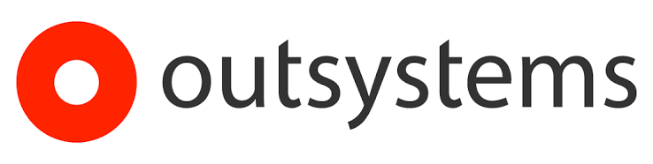
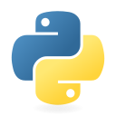
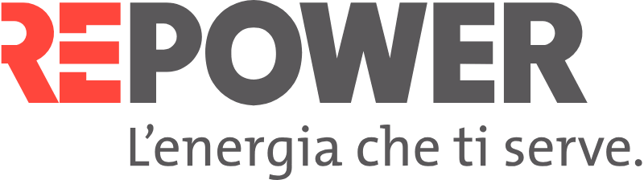
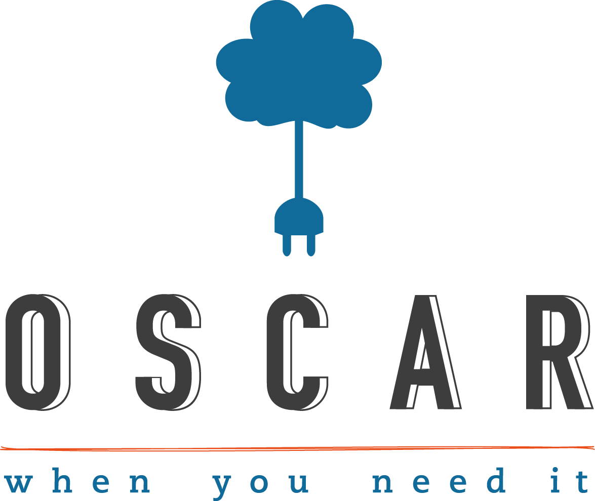
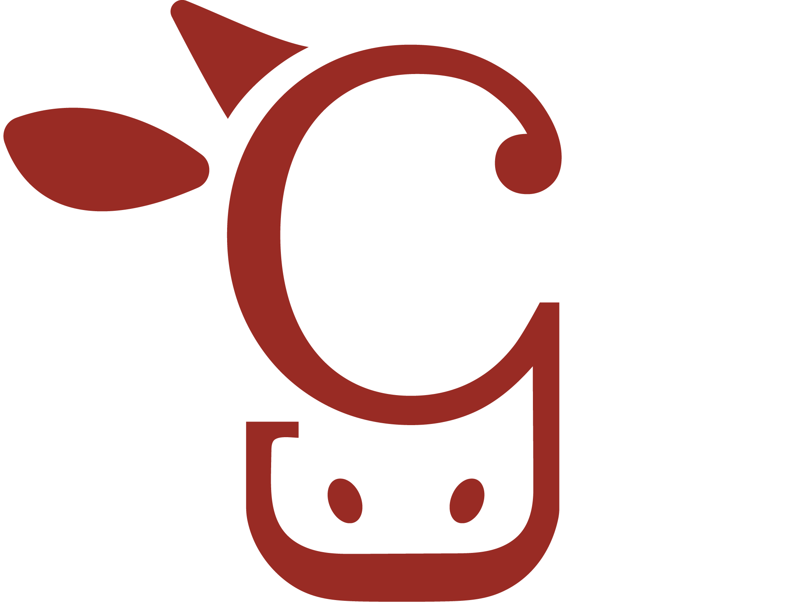
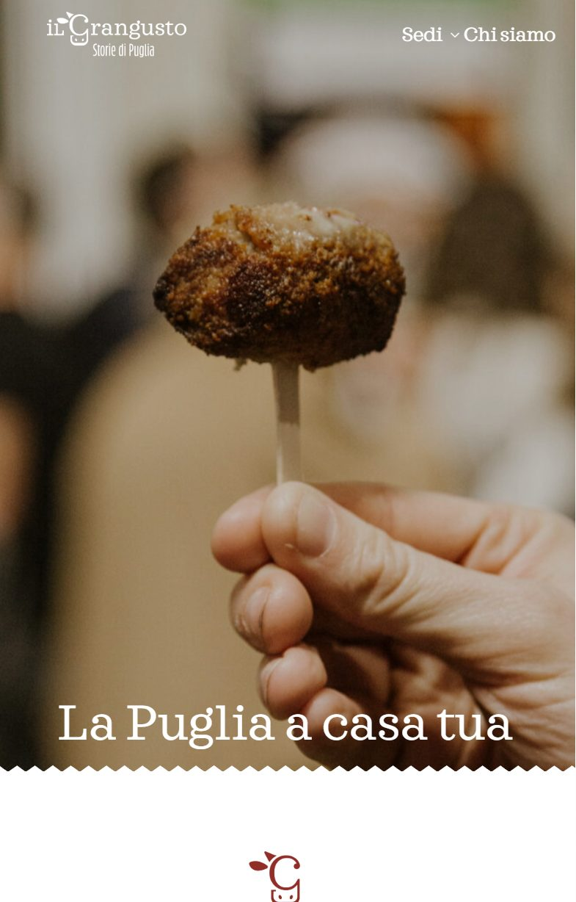
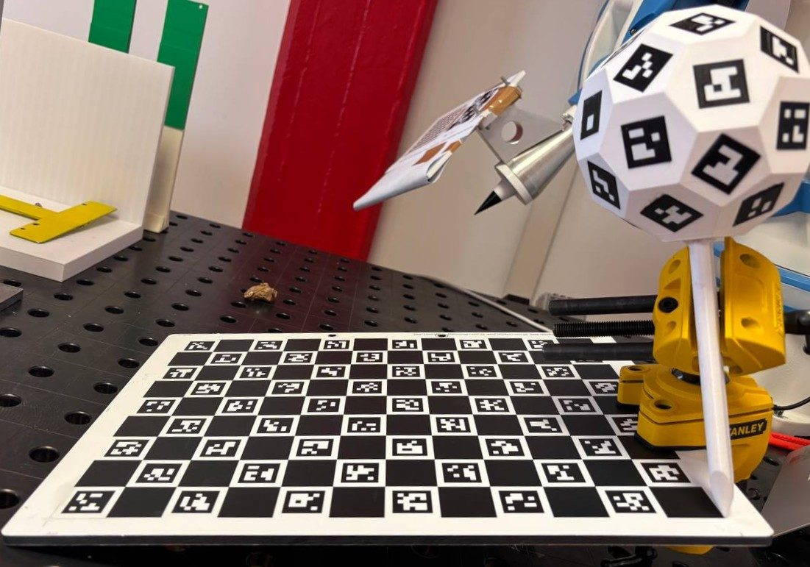
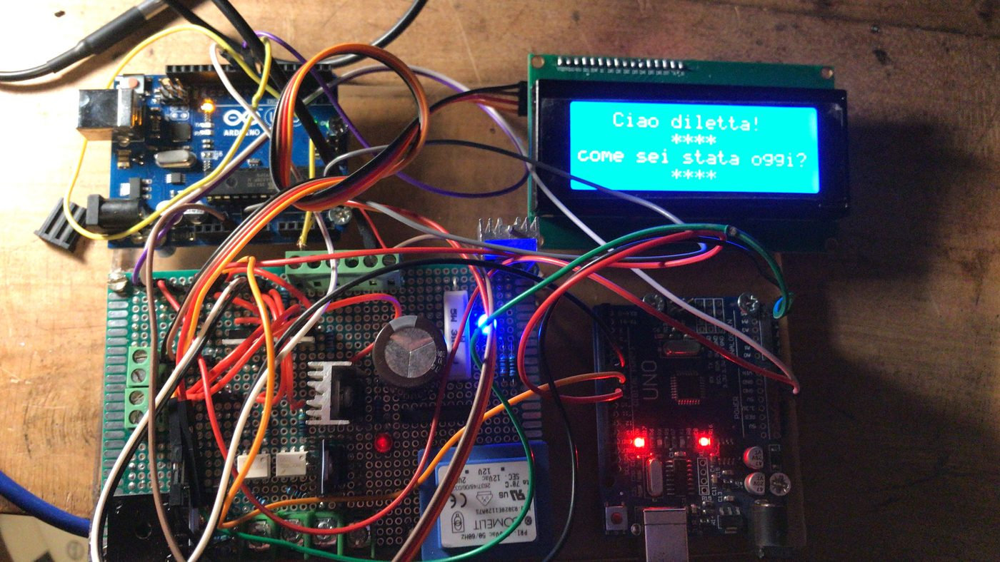

Chi sono
Sono un ingegnere informatico e consulente software specializzato nella piattaforma low-code
OutSystems (OutSystems 11 e ODC), con esperienza da Tech Lead in progetti enterprise per i
settori Banking, Assurance ed Energy.
Dopo due anni in Deloitte Risk Advisory, dal 2024 lavoro come freelance per startup, società di consulenza e PMI,
seguendo i progetti dall'analisi dei requisiti all'architettura, fino allo sviluppo e al rilascio. Al lavoro di consulenza
affianco lo sviluppo mobile (Flutter) e backend (Python) e un background di ricerca in
AI, Deep Learning e Computer Vision.
Percorso
- 2024 – oggiConsulente software freelance · Softify, Bari
- 2025 – 2026Ricercatore borsista AI & Computer Vision · Politecnico di Bari – Comau
- 2022 – 2024Consultant & Tech Lead · Deloitte Risk Advisory, Milano
- 2022IT Analyst · Accenture, Bari
- in corsoLaurea Magistrale in Ingegneria Informatica (AI & Data Science) · Politecnico di Bari
Competenze
Lingue: italiano (madrelingua), inglese (C1), spagnolo (B1).
Sviluppo Software
Sviluppatore software freelance certificato OutSystems: progetto e realizzo applicazioni
enterprise su OutSystems 11 e ODC e app mobile con Flutter,
dall'analisi dei requisiti all'architettura, fino al rilascio.

OutSystems
OutSystems 11 & ODC
Certificato
- Applicazioni web e mobile enterprise per Banking, Assurance ed Energy
- Architettura, integrazioni REST e database (PostgreSQL, AWS)
- Tech Lead di team di sviluppo internazionali, in Agile (Scrum)
Flutter
App mobile con Flutter
iOS & Android
- App cross-platform da un'unica base di codice (Flutter / Dart)
- Backend e API in Python, su PostgreSQL e cloud AWS
- Soluzioni su misura per PMI e attività locali
Tecnologie
- OutSystemsOutSystems
- FlutterFlutter

PythonPython- ReactReact
Clienti e collaborazioni
- S2EConsulenza IT · Milano

Repower ItaliaEnergia
Energy by OscarStartup cleantech
Il Gran GustoRistorazione

In precedenza: Consultant & Tech Lead in Deloitte Risk Advisory, su oltre 5 progetti per clienti Banking e Assurance.
AI & Computer Vision

Stima della posa 3D in tempo reale · Politecnico di Bari – Comau
Ricerca applicata in robotica: ho esteso l'algoritmo solvePnP di OpenCV per il tracciamento di marker
ArUco montati su una struttura geometrica multiforme, integrando modelli di Deep Learning.
L'obiettivo è una stima della posa più accurata e ridondante, ottimizzando densità e disposizione dei marker.
Python · OpenCV · PyTorch · Deep Learning
Altri progetti
- Rilevamento parcheggi con Computer Vision: rete neurale YOLO che individua in tempo reale i posti liberi in città, per la mobilità intelligente e la riduzione del traffico.
- Pubblicazione su Scientific Reports: co-autore di uno studio di Deep Learning in ambito medico che confronta Vision Transformer e CNN nella previsione della recidiva del tumore polmonare non a piccole cellule.
IoT & Embedded

Incubatrice automatizzata
Ho seguito l'intero ciclo di vita del prodotto: struttura fisica, architettura hardware e software di controllo,
fino all'integrazione tra l'elettronica e i sistemi informatici per il monitoraggio dei parametri.
ESP32 · Arduino · sistemi embedded
Contatti
Hai un progetto OutSystems, un'app da realizzare o un'idea in ambito AI e Computer Vision? Scrivimi.
Angelo Milella · Softify · P.IVA 08991670723 · Bari (BA)